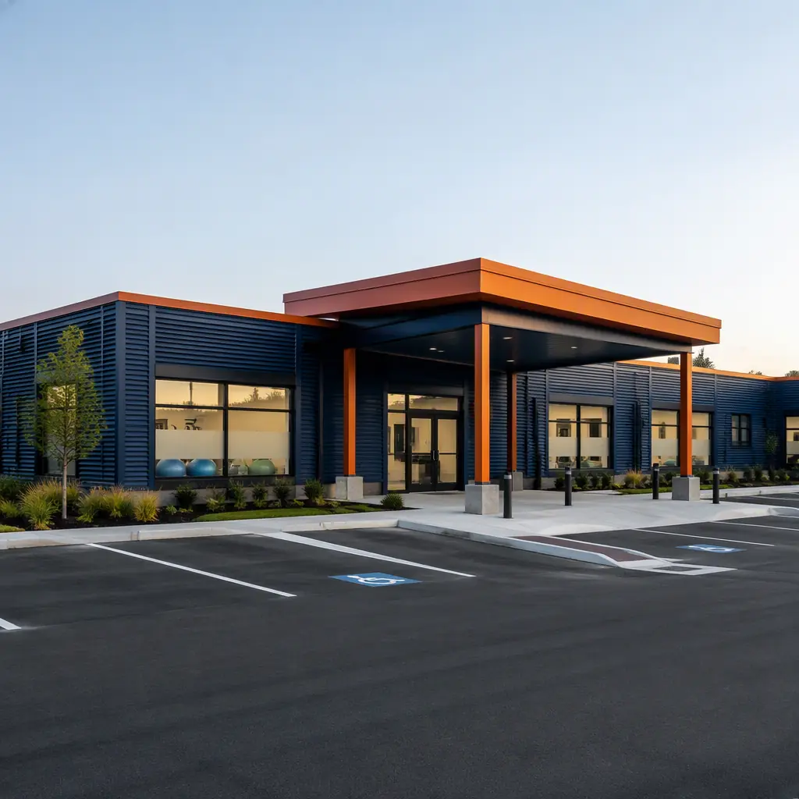
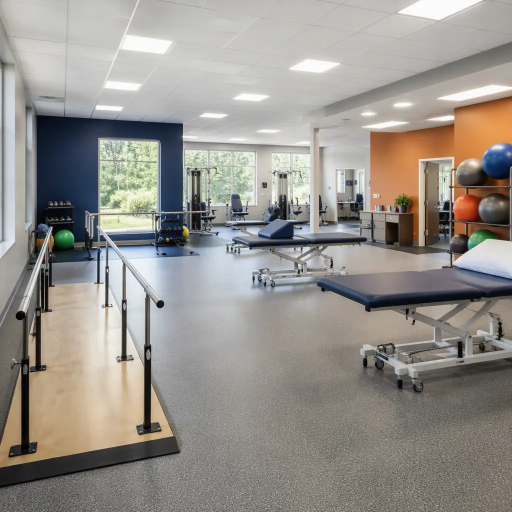
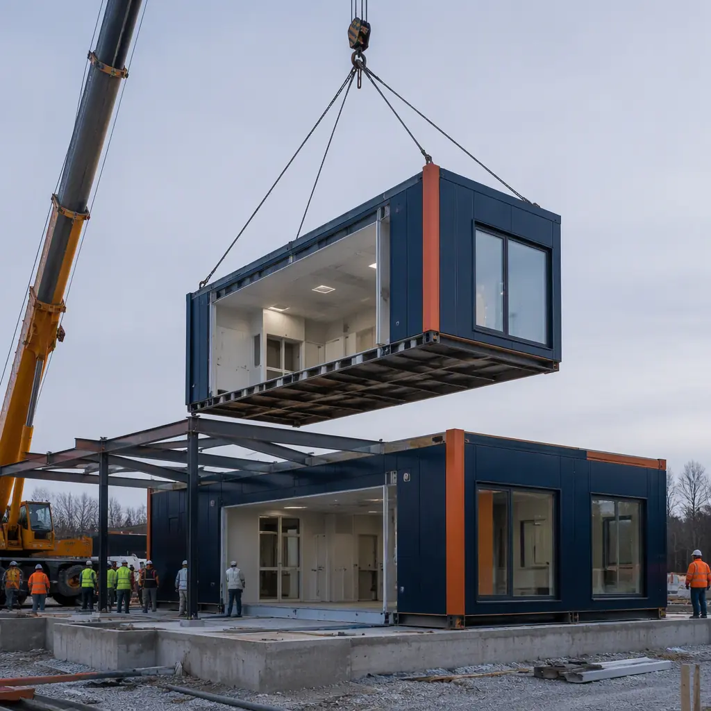
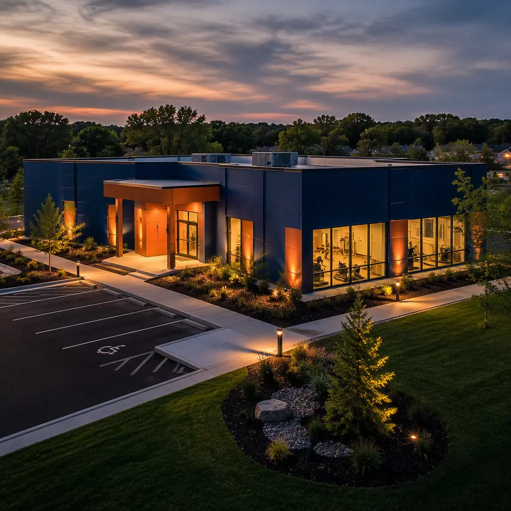

Physical therapy is the most facility-driven segment of outpatient rehabilitation: the treatment gym, private treatment rooms, and specialized equipment are the product. Yet most PT and rehab clinics are still built as generic retail fit-outs — leased shells with dropped ceilings and drywall partitions — that compromise the very things the practice sells: open gym space, acoustically private treatment rooms, durable floors, and the capacity to take on heavy rehabilitation equipment. Modular construction inverts that model. A purpose-built clinic assembled from factory-produced steel-frame modules delivers a 3,000–8,000 sq ft facility with an engineered treatment gym, STC-rated private rooms, and ADA-compliant layouts in 5–8 months at $180–320 per sq ft — against 12–18 months and $300–450 per sq ft for comparable site-built medical space. For single-practice owners and multi-location groups alike, the factory-built clinic is a faster, better-fit, and more profitable way to open. This guide covers the market, the space program, the engineering details that make a rehab clinic work, and the economics of modular delivery.

The Outpatient Rehab Market and What Clinics Need
Outpatient physical therapy in the United States is a roughly $50 billion market growing 5–7% per year, driven by an aging population — Americans 65 and older will nearly double to about 80 million by 2040 — and by expanding direct-access laws that now allow patients to see a physical therapist without a physician referral in all 50 states. The result is a sustained demand for new clinic capacity, and a distinct building type with defined requirements:
- Treatment gym space. The revenue engine of the clinic: 800–2,000 sq ft of open floor for parallel bars, treatment tables, exercise stations, and gait training — with floor loading and column spacing that accommodate equipment, not office columns.
- Private treatment rooms. 8–12 rooms for manual therapy, evaluations, and modalities, acoustically isolated for patient privacy under HIPAA expectations.
- Water and durability. Hydrotherapy tanks, hand-washing stations, and floor drains demand real plumbing and slip-resistant, impact-rated floors — features retail fit-outs rarely provide.
- ADA accessibility. Every element — doors, restrooms, treatment tables, circulation — must serve patients with mobility impairments, many of whom arrive in wheelchairs or with walkers.
Our outpatient clinic construction guide covers the broader clinic typology; this article focuses on the specific program of physical therapy and rehabilitation.
The Treatment Environment: Program and Space
A modern PT clinic balances open gym volume against private treatment capacity. The typical space program, and how modular delivery serves each element, looks like this:
| Area | Typical Program | Modular Delivery Notes |
|---|---|---|
| Treatment gym | 800–2,000 sq ft, clear-span | Steel-frame modules achieve long clear spans without columns |
| Private treatment rooms | 8–12 rooms, 100–150 sq ft each | Factory-built partitions with acoustical insulation |
| Front desk and waiting | Reception, check-in, patient flow | Casework and millwork factory-installed |
| Hydrotherapy | Tank or pool room with heavy water load | Reinforced module floor, plumbing pre-installed |
| Staff and support | Offices, break room, storage, laundry | Full MEP integration across modules |
| Accessibility | ADA restrooms, door clearances, ramps | Designed to ADA compliance from the first drawing |
The structural logic matters as much as the floor plan. Rehabilitation equipment — weight stacks, treadmills, ceiling-mounted lift systems, hydrotherapy tanks — imposes concentrated floor loads of 500–1,500 lb per unit. The steel-frame module, engineered as a rigid box with predictable deflection, carries these loads without the sag and bounce that plague wood-framed retail conversions. Our steel modular construction guide explains the structural capacity in engineering terms.
Operational flow completes the program. The front desk and check-in area must handle a high-volume patient stream — a busy clinic sees 60–100 patient visits per day — with a clear sequence from arrival, through check-in and insurance verification, to the treatment floor and back. In a factory-built clinic, the reception casework, patient flow corridor, and staff workstations are installed as part of the module, and the IT infrastructure for the electronic medical records system is pre-wired and tested. The clinic opens with its operations physically ready, not as a construction site with a sign on the door.
The Therapy Gym: Where the Program Lives
The treatment gym is the clinic's product, and its design determines both patient outcomes and staff productivity. A well-designed gym provides clear circulation for patients using walkers and wheelchairs, zones for different treatment modalities, and sightlines that let therapists supervise multiple patients safely. The modular advantage is spatial: because the gym floor is a factory-built steel diaphragm with long clear spans, the space is not interrupted by load-bearing partitions — the column-free volume a real gym requires.

Factory production also solves the gym's durability problem. The floor system is built and finished in the factory with slip-resistant, impact-rated commercial flooring over a rigid subfloor — the same floor specification that takes parallel bars and dropped dumbbells for years. Wall protection, corner guards, and equipment anchorage are installed before delivery, and the HVAC system is sized and commissioned for the gym's occupancy and equipment heat load. Our HVAC and indoor air quality guide covers the mechanical design for high-occupancy therapy spaces, and the gym and fitness center construction guide details the equipment-zone engineering used in both wellness and clinical settings.
Acoustics, ADA, and Infection Control: Compliance in a Clinic
Three compliance dimensions separate a purpose-built rehab clinic from a converted retail space, and each is stronger in factory construction:
- Acoustic privacy. Manual therapy, patient consultations, and modalities produce noise that must not cross treatment room boundaries. Factory-built partitions with acoustical insulation and sealed penetrations achieve STC ratings of 50+ in the treatment rooms — the construction discipline detailed in our acoustics and soundproofing guide. The gym itself is deliberately zoned acoustically: heavy-impact treatment areas are separated from quiet evaluation rooms, and the HVAC is sized and ducted so mechanical noise does not mask clinical conversation — details that are engineered into the module, not tuned after occupancy.
- ADA accessibility. Door widths, turning radii, restroom clearances, and accessible treatment stations are engineered into the module layout and verified at factory inspection — not discovered as field deficiencies after occupancy. The dimensional requirements are covered in our ADA compliance guide.
- Infection control. Seamless, cleanable surfaces at hand-washing stations, treatment areas, and hydrotherapy rooms, with plumbing and drainage installed to medical standards — the same infection-control logic our MEP integration guide documents for clinical buildings.
Because these systems are installed and inspected in the factory, the clinic opens with its compliance documentation complete — a practical advantage when the practice is pursuing accreditation, insurance contracts, or a state facility license.
Timeline and Cost: Modular vs Site-Built
For a practice owner, the two numbers that matter are months to first patient and dollars per square foot. The comparison for a 5,000 sq ft clinic:
| Metric (5,000 sq ft clinic) | Modular | Site-Built Medical |
|---|---|---|
| Design and permitting | 2–3 months | 3–5 months |
| Construction | 3–4 months (factory + site in parallel) | 9–13 months |
| Door-to-first-patient | 5–8 months | 12–18 months |
| Construction cost per sq ft | $180–320 | $300–450 |
| Revenue ramp exposure | 5–8 months of rent/carry | 12–18 months of rent/carry |
| Change orders | Minimal — design frozen pre-fabrication | 5–12% of budget typical |
For a clinic generating $200,000–400,000 per treatment room per year, the 6–10 month schedule advantage is worth $100,000–300,000+ in earlier revenue — often the single largest line item in the business case. Our cost per square foot guide provides the underlying benchmarks, and the project timeline analysis quantifies the schedule compression across building types.

Multi-Location Economics: The Franchise Prototype Advantage
Physical therapy is consolidating rapidly. Multi-location groups and franchise systems now account for a growing share of U.S. clinics, and their expansion economics are identical to those of every other prototype business: the faster and cheaper each location opens, the faster the network compounds. For these operators, modular construction is not merely a delivery method — it is the supply chain.
A PT group opening eight clinics per year faces a simple arithmetic problem: eight site-built projects means eight schedules, eight general contractors, eight sets of change orders, and eight opening dates that slip. Eight factory-built clinics from one engineered prototype means one design, one documented quality system, and eight predictable openings — each at a fixed price and a fixed date. In outpatient rehab, where revenue follows capacity, the network that opens clinics fastest captures the market; modular delivery is how that speed becomes routine rather than exceptional.
The prototype logic extends to the clinic's operational design: treatment room layouts, equipment placement, and patient flow are engineered once and reproduced, so staff training and care protocols transfer between locations without re-learning the building. Equipment packages are standardized against the module design — the same parallel bars, plinth tables, and modality machines fit every location — which lets a group negotiate volume pricing with equipment suppliers and pre-order fixtures before construction begins. Even the facility maintenance burden is predictable: one mechanical system design, one documented set of warranties, and one spare-parts catalog across the entire portfolio.
For practice owners and investors evaluating the capital structure, our construction financing guide covers the loan structures available for medical office properties, and the developer ROI guide models the multi-location return. The combined effect of faster openings, lower construction cost, and standardized operations is a portfolio whose growth is limited by market demand rather than by construction capacity — which is exactly the position a consolidating industry rewards.
Planning a Modular PT & Rehab Clinic
- Define the treatment model first. The mix of gym volume, private treatment rooms, and modalities (including hydrotherapy) determines the module layout, floor loads, and plumbing scope — lock it before design.
- Confirm the equipment list early. Every piece of rehabilitation equipment has a footprint, weight, and utility requirement; the equipment schedule drives the structural and MEP design of the gym module.
- Choose the site for module delivery. Crane access, delivery corridor, and parking requirements shape site selection — our transportation and logistics guide covers the assessment.
- Verify acoustics in the design review. Confirm the STC ratings of treatment room partitions and the HVAC noise criteria with the manufacturer's engineer before fabrication.
- Plan the compliance package. Require factory inspection records, ADA verification, and MEP commissioning documentation as contract deliverables — they are the licensure and accreditation file.
Practice owners and healthcare investors comparing facility options should also review our healthcare facilities guide and behavioral health facilities guide — the same factory-built clinical program applied across the outpatient continuum, including urgent care and specialty clinic types.
